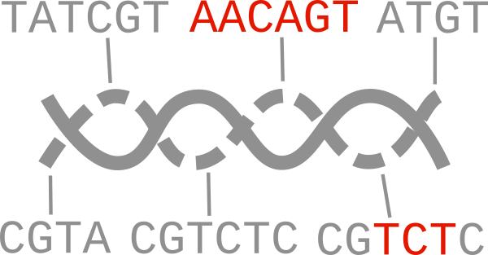

Ediacara
Ediacara helps interpreting sequencing data of assembled DNA constructs (plasmids). It's used in the Sequeduct pipeline.
Install
# pip install ediacara
pip install --upgrade git+https://github.com/Edinburgh-Genome-Foundry/Ediacara.git@main
Using Ediacara requires the plasmid reference sequences (Genbank), the alignments in PAF format, and a TSV file of coverage (depth) counts. Optionally, the user can also specify consensus (or de novo assembly) files that will be compared with the references.
Badread is a long read simulator that generates fastq files from reference sequences.
Minimap2 can create SAM or PAF alignments from fastq and reference fasta files.
paftools.js can convert from SAM to PAF.
The TSV file is the output of samtools depth -aa.
Canu can create an assembly file from filtered FASTQ reads that align best to the reference.
Usage
An example for creating alignments in the terminal, for a reference named ABC_1:
# badread simulate --reference ABC_1.fa --quantity 50x --length 1500,500 > ABC_1.fastq
minimap2 -a ABC_1.fa ABC_1.fastq > ABC_1.sam
samtools sort -O sam -T sample.sort -o ABC_1_sorted.sam ABC_1.sam
samtools depth -aa ABC_1_sorted.sam > ABC_1.tsv
paftools.js sam2paf ABC_1.sam > ABC_1.paf
Create a de novo assembly with Canu:
./canu-2.1.1/bin/canu -p egf -d ABC_1 genomeSize=8k -nanopore filtered_fastq/ABC_1_filtered.fastq
Create a PDF report in Python with Ediacara:
import ediacara as edi
import dnacauldron # for loading sequence files
tsv_file = "/path/to/ABC_1.tsv"
tsv = edi.ComparatorGroup.load_tsv(tsv_file)
paf_path = "/path/to/ABC_1.paf"
paf = edi.ComparatorGroup.load_paf(paf_path)
reference_paths = ["/path/to/ABC_1.gb"]
records = dnacauldron.biotools.load_records_from_files(files=reference_paths, use_file_names_as_ids=True)
references = {record.id: record for record in records}
alignments = {"paf": paf, "tsv": tsv}
comparator_group = edi.ComparatorGroup(references, alignments)
assembly_paths = {"ABC_1": "/path/to/canu_assembly/ABC_1/egf.contigs.fasta"}
comparator_group.perform_all_comparisons(assembly_paths=assembly_paths)
# Write a PDF report on all constructs:
edi.write_comparatorgroup_report("report_ABC.pdf", comparator_group)
If we want to investigate which of the parts are in the construct, we can align the part sequences against the consensus or de novo sequence and create PDF report:
assembly = edi.Assembly(
assembly_path="/path/to/canu_assembly/ABC_1/egf.contigs.fasta",
reference_path="/path/to/ABC_1.gb",
alignment_path="/path/to/ABC_1_part_alignment.paf",
assembly_plan=assembly_plan,
)
assemblybatch = edi.AssemblyBatch(assemblies=[assembly], name="EGF review")
assemblybatch.perform_all_interpretations_in_group()
edi.write_assembly_analysis_report("review_report_pdf", assemblybatch)
Versioning
Ediacara uses the semantic versioning scheme.
Copyright
Copyright 2021 Edinburgh Genome Foundry
Ediacara was written at the Edinburgh Genome Foundry by Peter Vegh.